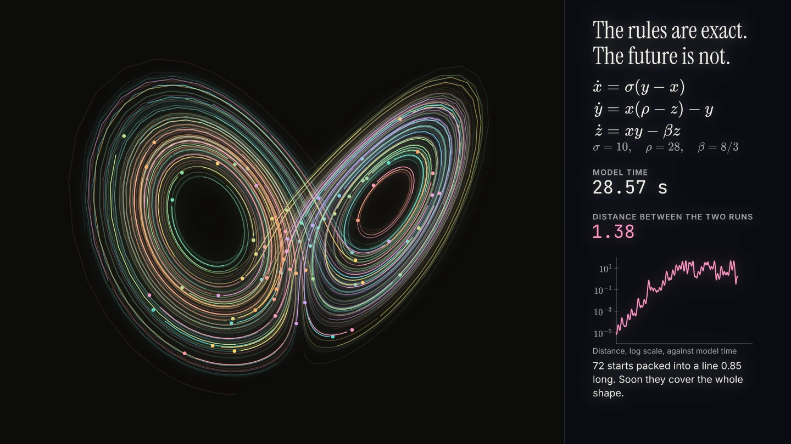
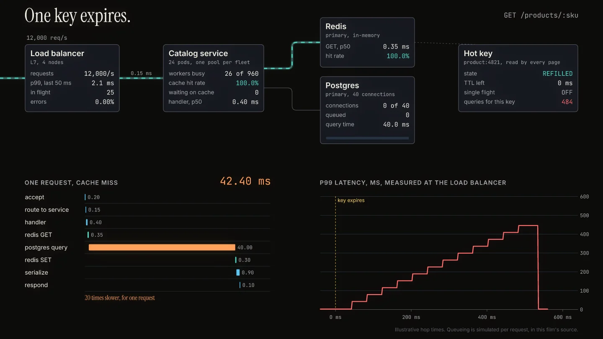
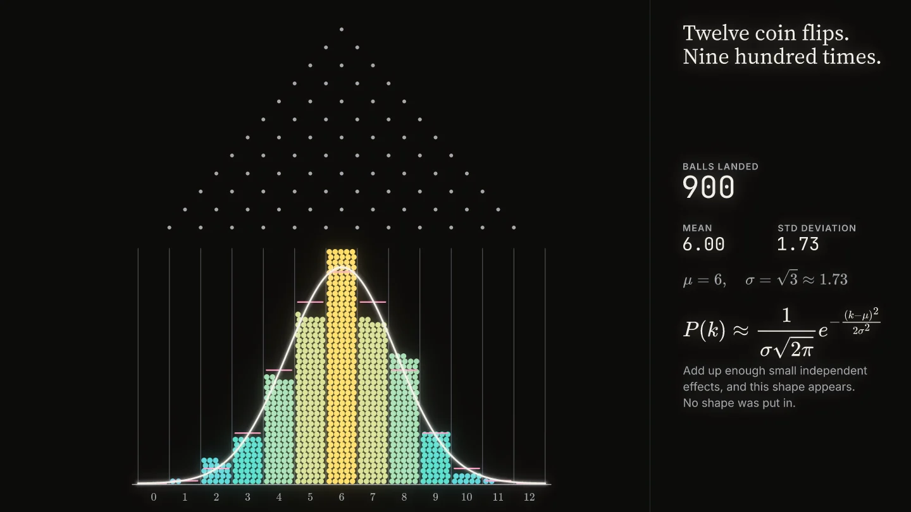
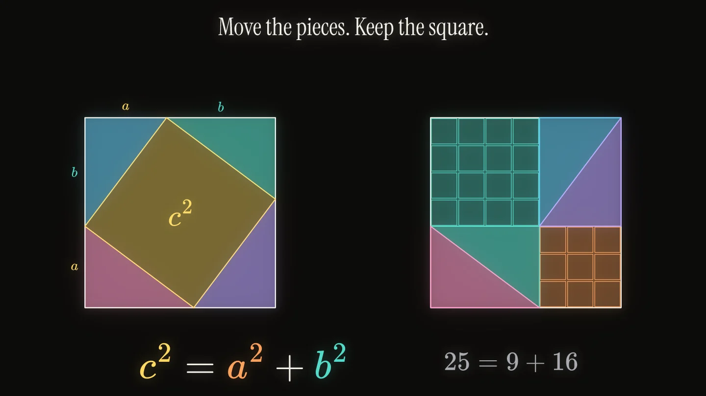
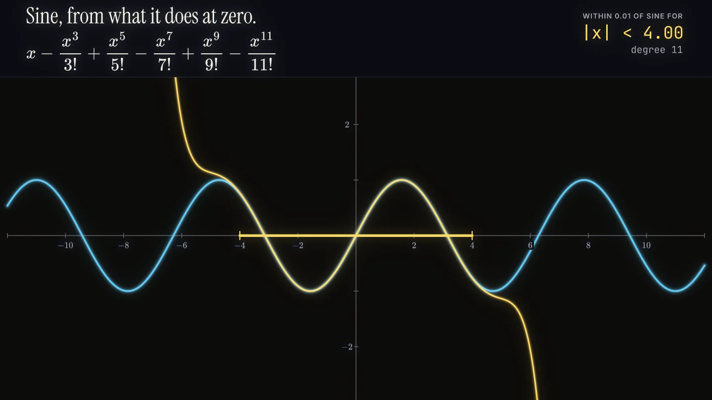
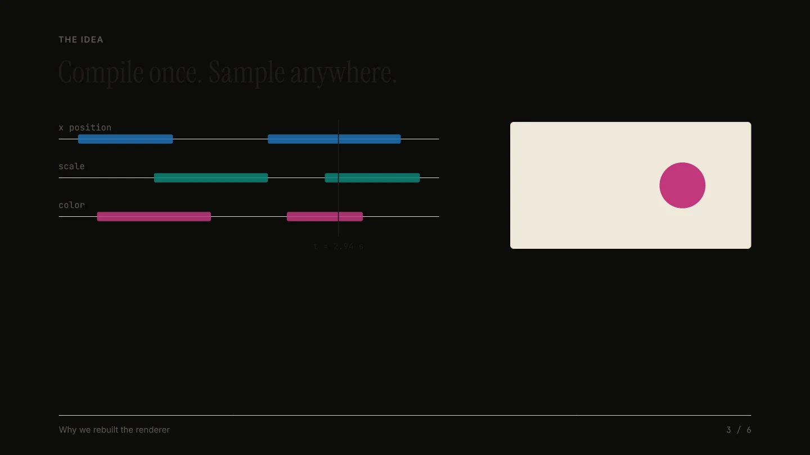

Films.
Short explanations made with Vizmatic. Hover over any one to bring it to life. Every film here runs live in your browser, is open source, and can export to MP4.

A drawing is a sum of circles
A real Fourier transform of an ampersand, redrawn by a chain of rotating arrows as the term count grows from 1 to 200.

A matrix moves the whole plane
A grid under one matrix: basis arrows, the determinant as area, and the two directions that stay on their lines.

The grid bends, its right angles survive
A grid unfolds under z squared and curls into a disk under a Mobius map, with the angle at every crossing measured live.

One point, two shadows
A point sweeps the unit circle, sine and cosine trace themselves, and the formula collapses into Euler's identity.

Downhill, one step at a time
Real gradient descent on a two-basin loss surface: two starts 0.12 apart travel together, then finish in different minima.

Attention, computed
Queries, keys, and values produce a live heatmap as softmax(QK^T / sqrt(d)) V builds up term by term.

The rules are exact, the future is not
The Lorenz system integrated with real numbers: two starts a hair apart part ways, then 72 fill the butterfly.

One key expires
A dense service diagram comes alive: a hot key expires at 12,000 requests per second, and a simulated stampede hits Postgres.

Twelve coin flips, nine hundred times
A Galton board settles into a histogram that meets the Gaussian curve, with mean and deviation measured from the balls.

Move the pieces, keep the square
A proof by rearrangement: four triangles slide inside a square, and the leftover area writes the theorem.

Sine, from what it does at zero
Polynomials hug the sine curve further out as each term grows in, with the trusted range measured live.

Why we rebuilt the renderer
A six-chapter talk that plays in stepped mode, with a live timeline and measured results.